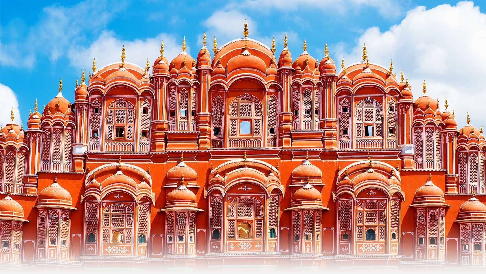
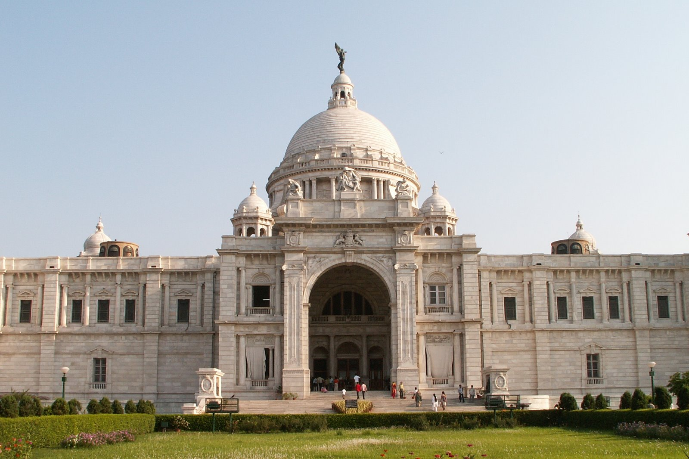

Historical Places of India
Taj Mahal, Agra
Qutub Minar, Delhi

Hawa Mahal, Jaipur

Victoria Memorial, Kolkata
India Gate, Delhi
Jallianwala Bagh, Punjab
Agra Fort, Uttar Pradesh
Red Fort, Delhi
Fatehpuri Sikri, Uttar Pradesh
Thank you
designed by Shaily Shakya